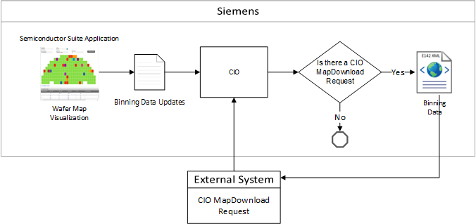

Requesting and Returning Map Data Updates
The sender of the map data submits a CIO MapDownload request to retrieve the updated bin code information. Siemens transmits the updated information back to the sender who then updates the System of Record source map.
The CIO MapDownload request process conforms to the Semiconductor E142 guidelines. Opcenter Execution Semiconductor retrieves all of the map data pertinent to a request and generates an appropriate outbound document similar to the E142 XML structure.
Outbound Data Flow Diagram
This diagram depicts the flow of data from Opcenter Execution Semiconductor to CIO to an external source after a download is requested.

| Note: | Refer to the Opcenter Connect MOM User Guide for information about Opcenter CN MOM. |